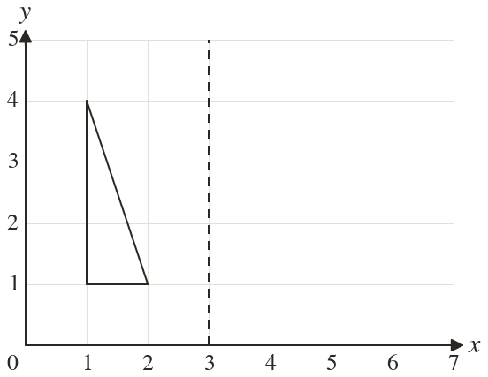
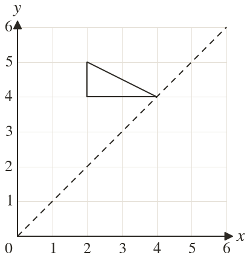
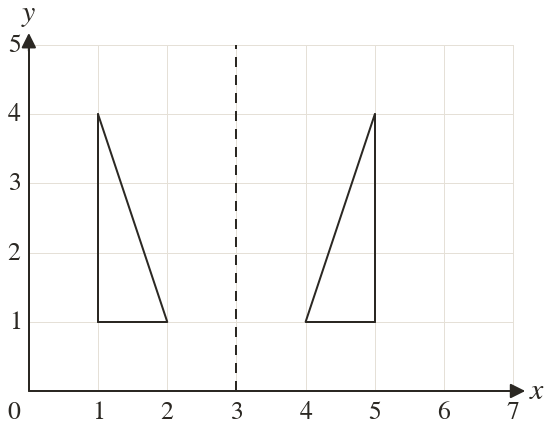
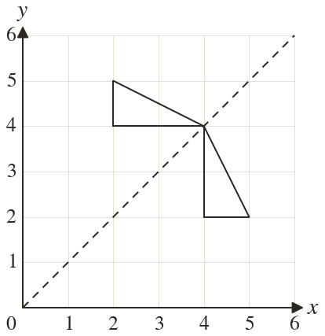

Westonbirt Maths · Transformations
Reflecting in a Mirror Line
Name: ______________________ Date: ____________
1
Reflect the triangle in the line
Write down the corners of the image.
Write down the corners of the image.
2
Reflect the triangle in the line Write down the corners of the image.
3
Reflect the point in the line
4
Reflect the point in the line
5
Reflect the point in the line
Ext
The point (a, is reflected in the line and lands on Find a and



